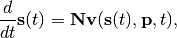

Steady State Analysis¶
The dynamics of a biochemical network is described by the system equation

where  is the vector of species concentrations,
is the vector of species concentrations,  is a vector of time independent parameters, and
is a vector of time independent parameters, and  is time. The steady state is the solution to
the network equation when all the rates of change zero. That is the concentrations of the floating
species, that satisfy:
is time. The steady state is the solution to
the network equation when all the rates of change zero. That is the concentrations of the floating
species, that satisfy:
For example you can use steadyStateSelections to select which value getSteadyStateValues should retrieve:
>>> rr.steadyStateSelections = ['S1']
>>> rr.getSteadyStateValues ()
array([ 0.54314239])
The following methods deal wth steady state analysis:
| RoadRunner.steadyStateSelections | |
| RoadRunner.steadyState() | Attempt to evaluate the steady state for the model. |
| RoadRunner.getSteadyStateValues() | Performs a steady state calculation (evolves the system to a steady state), then calculates and returns the set of values specifed by the steady state selections. |